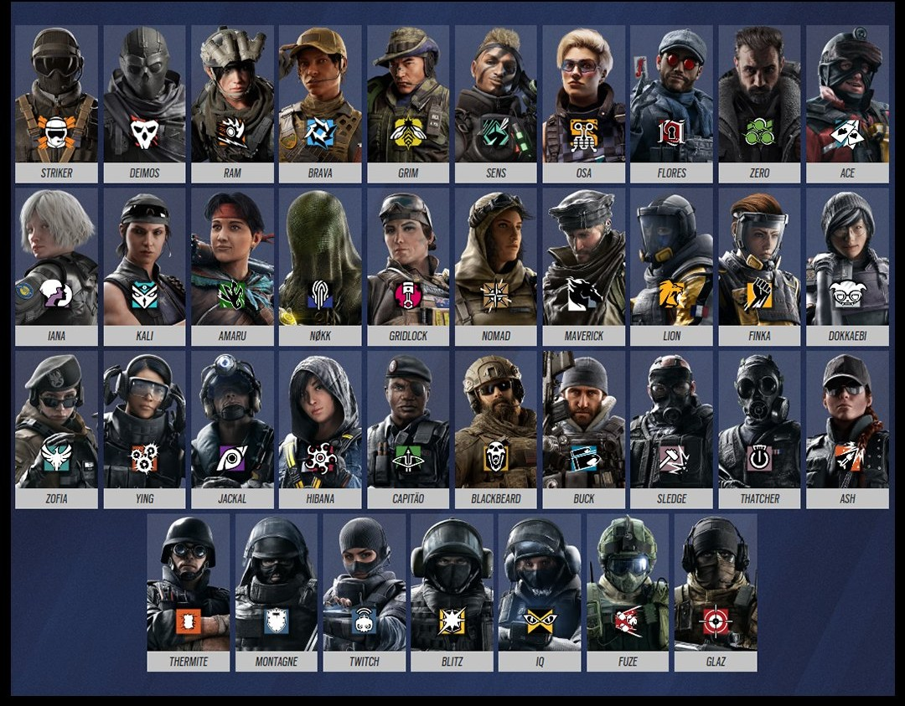
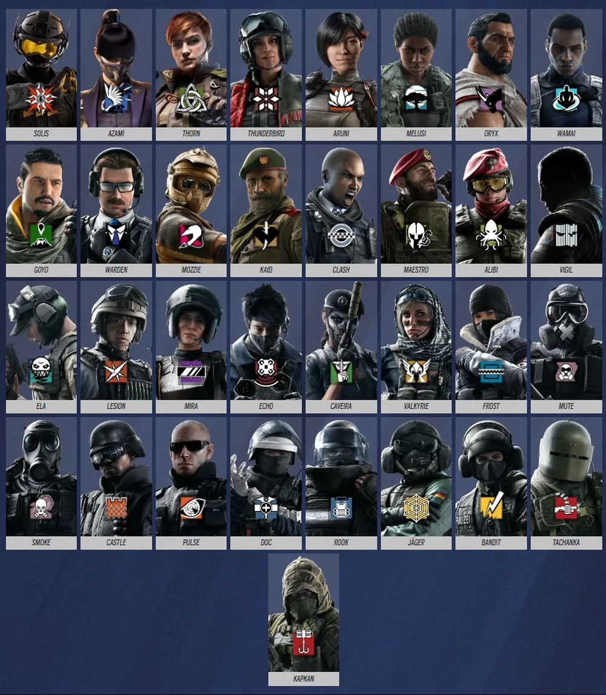
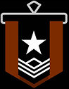
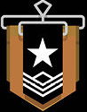
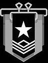
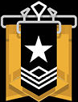
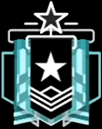
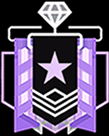
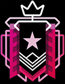

Un poco sobre la historia de R6:
Tom Clancy's Rainbow Six Siege es un videojuego de disparos táctico en línea desarrollado por Ubisoft Montreal y distribuidor por Ubisoft. Salió a la venta en todo el mundo para Microsoft Windows, PlayStation 4 y Xbox One el 1 de diciembre de 2015 y para PlayStation 5 y Xbox Series el 1 de diciembre de 2020. El juego tuvo una acogida muy positiva por parte de los críticos y el público, con elogios dirigidos sobre todo al multijugador y a su enfoque táctico, siendo considerado uno de los mejores juegos multijugador hasta la fecha. Ubisoft se asoció con la ESL para convertir a Siege en un juego de esports. En febrero de 2022, el juego superó los 80 millones de jugadores en todas las plataformas, y en abril de 2022, se anunció una versión para Android y IOS.
De que trata este Videojuego?
El juego consiste en partidas de equipos de cinco atacantes contra cinco defensores. Los defensores deben defender un objetivo dentro de una estructura, ya sea un rehén, dos bombas o un contenedor biológico. Si logran defender al objetivo con éxito o eliminan a todos los atacantes, ganan la ronda. Los atacantes deben rescatar, desactivar, o asegurar al objetivo (respectivamente) , o eliminar a los defensores para ganar.
Trailer de la nueva version
Luego de 10 años de su lanzamiento oficial sacaron Rainbow Six Siege X representa una de las actualizaciones más grandes del juego, enfocada en un overhaul del motor, mejoras gráficas y el lanzamiento del juego bajo un modelo gratuito.
Modos de juego:
Rehén: los atacantes deben localizar y extraer a un rehén de un edificio, mientras los defensores deben evitarlo.
Bomba: los atacantes deben localizar una de dos bombas y plantar o activar un sedax (Sistema Experto en Desactivación de Artefactos Explosivos). Los atacantes ganan la ronda si logran desarmar una bomba o si eliminan al equipo enemigo.Asegurar la zona: los atacantes deben localizar una zona donde se encuentra un contenedor de material biológico peligroso y deben asegurar el área; para ello, deben permanecer en la sala durante 10 segundos consecutivos sin ningún defensor en el área.
Para mas informacion click aquiQue bandos existen y que operadores puedes jugar:
El juego cuenta con una amplia variedad de personajes elegibles, llamados operadores. Cada operador posee armas exclusivas y una habilidad única que puede utilizar durante los combates, como también estadísticas que determinan su nivel de blindaje y velocidad.
ATACANTES
Son los encargados de rescatar al rehén, asegurar el contenedor de riesgo biológico o desactivar las bombas , dependiendo el modo de juego, además de matar a todos los defensores.

DEFENSORES
Son los personajes responsables de defender y/o evitar que los atacantes aseguren el contenedor de riesgo biológico, liberen al rehén o desactiven las bombas.

Rangos competitivos
Los rangos en Rainbow Six Siege (Ranked 2.0) se basan en dos sistemas separados: el rango visual (Cobre a Campeón) y el MMR/habilidad oculta. Todos inician en Cobre V y suben ganando puntos (RP), pero el emparejamiento usa el MMR oculto para enfrentarte a rivales de tu nivel real, independientemente del rango visible.
Tabla de rangos
| Rango | |||||||
|---|---|---|---|---|---|---|---|
| Nivel | Cobre  |
Bronce  |
Plata  |
Oro  |
Platino  |
Diamante  |
Campeón  |
| I | I | I | I | I | I | ||
| II | II | II | II | II | II | ||
| III | III | III | |||||
| IV | IV | IV | III | III | III | ||
| V | V | V | |||||
Tener en cuenta que para subir a cualquier rango pide siempre el mismo RP (100)
Ahora pasaremos a ver a lo que vinimos aqui, que armas utilizan estos operadores, que es mas facil y dificil de utlizar, que utilidad tiene algunas de ellas y sus accesorios
ARMAS:
Meta actual, accesorios, utilidad y mas...
En R6 hay una gran variedad de armas, tenemos armas de corta distancia, larga distancia, automaticas, semiautomatica y francotiradores.
DMR
Un fusil de tirador designado (DMR, por sus siglas en inglés) es un arma de alta precisión, semiautomática y con mira telescópica, diseñada para llenar el vacío entre fusiles de asalto convencionales y fusiles de cerrojo. Son ideales para media-larga distancia.Destacan por su capacidad de eliminar enemigos en 2-3 disparos y su alta penetración.
Los modelos más notables incluyen el CAMRS (Buck), el 417 (Twitch/Lion/Sens) , el AR-15.50 (Maverick) y la nueva PMR90A2.
LMG
Las ametralladoras ligeras (LMG) en Rainbow Six Siege son armas de apoyo con alta capacidad de munición y gran daño, ideales para fuego de supresión, aunque con retroceso elevado y recargas lentas. Destacan la LMG-E (Zofia/Ram), Alda 5.56 (Maestro), 6P41 (Finka/Fuze) y la DP27 (Tachanka).
ESCOPETAS
En Rainbow Six Siege, las escopetas son armas devastadoras a corta distancia, ideales para destrucción de entornos y combate cercano. Los modelos principales incluyen la M590A1 (SAS), M1014 (FBI), M870 (GSG9), SG-CQB (GIGN), SASG-12 (Spetsnaz), Supernova (SDU), TCSG12 (Kaid/Goyo), ACS12 (Azami/Ela) y la BOSG.12.2.
SMG
Las subametralladoras (SMG) en Rainbow Six Siege son armas secundarias o primarias de alta cadencia, diseñadas para combates cercanos, ofreciendo gran movilidad pero alto retroceso. Destacan la SMG-11 (Smoke/Sledge), la SMG-12 (Dokkaebi/Vigil/Ying) y la MP5 (melusi/doc) muy populares por su letalidad.
PISTOLAS
Las pistolas en Rainbow Six Siege son armas secundarias esenciales para el combate a muy corta distancia o cuando el arma principal se queda sin munición, destacando opciones como la P226 Mk 25, M45 MEUSOC, 5.7 USG, P12, P9, LFP586, PMM, GSH-18, y MK1 9mm . Se pueden equipar con silenciadores y son cruciales para agentes específicos.
Puedes ver un tierlist de las mejores armas del R6 aca -----> TierList
Cuentanos tus experiencias y opiniones jugando a esta entrega
Para dejar tu opinion presiona AQUI!